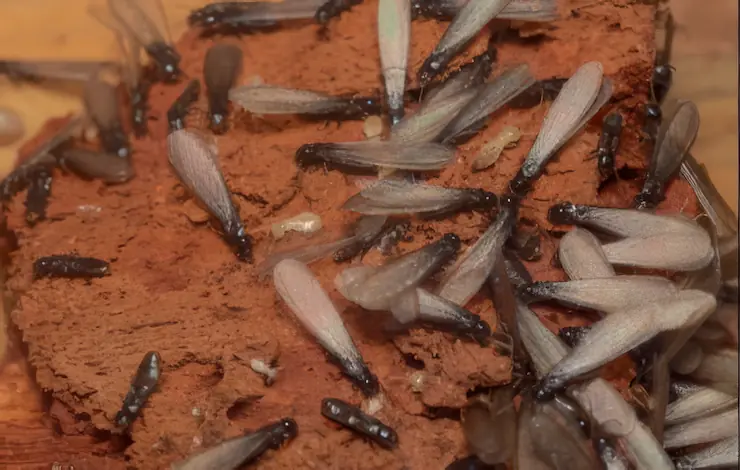
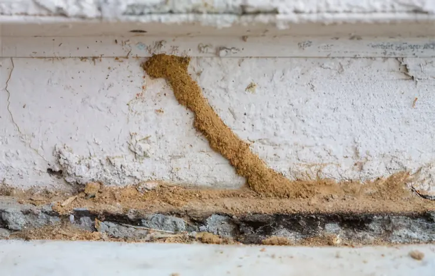

Las termitas comen madera de adentro hacia afuera, dejándola hueca y dañando su integridad
estructural. Si las estructuras de madera en su hogar suenan huecas o tienen daños visibles, puede
ser un signo de actividad de termita. La madera dañada por termitas también puede tener un aspecto
de panal de abeja, así que esté atento a eso también.
Puertas deformadas y ampollas en el suelo
El daño de la termita se confunde fácilmente con daños causados por el agua. A menudo, en caso de
daños causados por el agua en el hogar, las estructuras de madera independientes como puertas y
marcos de ventanas pueden deformar y los pisos de madera pueden tomar un aspecto ampollado y hebilla
en algunos lugares. Esto no es causado directamente por el daño de la termita, sino, más bien, la
humedad que producen cuando comen.
Alas desechadas

Cuando las termitas voladoras o enjambres encuentran un buen lugar para aparearse y comer, se
asientan y pierden sus alas poco después. Si ves termitas voladoras en tu casa, has cogido la
infestación antes de que pueda afianzarse, pero las alas desechadas significan que las termitas se
han hecho en casa. La presencia de alas desechadas es una señal segura de que necesita ayuda de un
exterminador de control de termitas.
Tubos de barro y túneles en madera

Las termitas subterráneas dejan tubos de barro del tamaño (lanzadera) de un lápiz donde su casa entra
en contacto con el suelo exterior. Estos son caminos dejados atrás cuando las termitas emergen de
sus nidos para alimentarse. Las termitas de madera seca dejan túneles distintivos en las estructuras
de madera, que es una de las maneras más fáciles para que un exterminador de termitas profesional
diagnostique qué tipo de infestación de termitas está en su vivienda.
Carcoma de la Madera
La carcoma se desarrolla en dos fases distintas, la primera de ellas es en forma de larva o gusano,
sufriendo posteriormente una metamorfosis que la convertirá en un pequeño escarabajo.
La que realmente es más peligrosa para nuestros muebles o piezas de madera es la primera, la fase de
larva, en la cual tendremos que tener especial cuidado de prevenir su ataque si todavía no estamos
infectados por la plaga o saber los métodos y remedios caseros para eliminarla si por el contrario ya
hemos detectado que la pieza está infectada por carcoma.
En su fase adulto tiene esa capacidad de vuelo, y aunque solo alcanza distancias cortas, es fundamental
para la carcoma y desgraciadamente peligrosa para nosotros, ya que le permitirá colocar sus huevos en
diferentes lugares próximos, propagando la plaga de forma rápida. Su fase de coleóptero adulto es corta:
en tan sólo unos pocos días, buscará pareja, no ingerirá ningún alimento, realizará una nueva puesta de
huevos y morirá.
¿Por qué madera?
Muchos de los escarabajos que agrupamos bajo el nombre de carcoma, en su fase larvaria disponen de
bacterias especiales en su sistema digestivo que les ayudan a procesar la celulosa presente en la
madera. Hay otros tipos de carcoma que disponen de enzimas específicas complejas especializadas en
descomponer la celulosa. Incluso hay un determinado tipo de carcoma que no se alimenta de la propia
madera, sino de los hongos presentes en la madera en estado de descomposición.
En general, en su fase de larva, la preferencia de la carcoma es la madera seca, raramente les atrae la
madera fresca recién cortada. Sin embargo, preferirán madera seca pero con un cierto grado de humedad,
esta humedad hace que su interior sea más blando y por lo tanto más fácilmente digerible para las
larvas.
Sobre estos elementos compuestos de madera seca será donde la carcoma adulta pondrá sus huevos, y siempre
que pueda lo hará en alguna grieta o fisura que presente la pieza de madera.
Una vez eclosionados los huevos, las larvas de carcoma se introducirán en el interior de los muebles y
estructuras de madera, esta madera será su alimento hasta su fase adulta.
Esta fase de larva de carcoma tiene una duración variable dependiendo de la especie de carcoma ante la
que nos encontremos y las condiciones de la madera que les sirve de alimento, pero como mínimo se
extenderá durante un año, tiempo suficiente para detectarla y tratarla convenientemente.
La metamorfosis de larva de Carcoma a coleóptero se produce en el interior de los elementos de madera
donde han desarrollado su fase de larva, durante unas 7 a 8 semanas sufrirá esta metamorfosis, y de la
cual saldrá en forma de escarabajo con capacidad de volar.